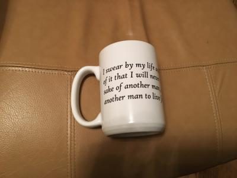
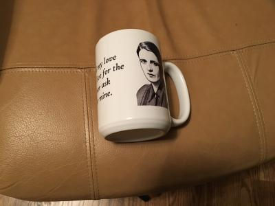
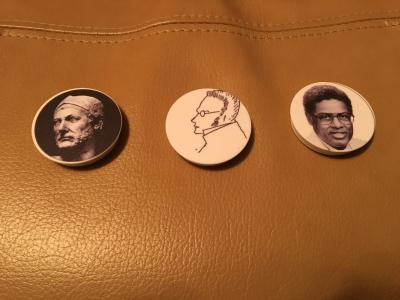

In this rotation, we learned the basics of designing garments and sublimation printing. I had to make three different products: a tshirt, a mug, and a popsocket.
The first product, the tshirt, had to be related to either Ohio, Hudson, or WRA. I chose to make a WRA tshirt with a picture of the chapel in the center. To do this, I first had to create my design on CorelDRAW. Once I completed my design, I had to transport that image file to our tshirt design software called GTX Graphics Lab. I then had to transport that file to the tshirt printing machine. I pressed my tshirt to remove the wrinkled, then put it in the machine to print the design. After it was finished, I pressed it one more time to dry the wet ink. Overall, I'm happy with the way it turned out and it's a very quick and easy way to design tshirts.
The second product that I made was a mug that I designed. I chose to design an Ayn Rand themed mug with one of her more famous quotes next to her face. In order to do this I had to create my design using CorelDRAW with a template of the mug's dimensions. After I finished designing, I had to mirror the whole thing so it would look the way I wanted when I put it on the mug. Then I printed out the design and taped it on a blank mug. I then had to put it in the mug press for five minutes on 400 degrees. When that process was finished, I took the mug out, removed the tape, and put it in a bucket of water to cool. I am really satisfied with the way the mug turned out, and I believe products like these have a lot of market potential if made well, as they are so easy to make and very awesome looking.
 The finals products I made were popsockets with my own designs. I made one of the general Hannibal Barca, one of the philosopher Max Stirner, and one of the economist Thomas Sowell. To create these, I first had to create the designs in CorelDRAW using the parameters of a popsocket (1.5x1.5 inches). I then had to use the sublimation printer to align the parameters on the popsocket so that it would print on the right spot. I then transported my designs to the sublimation printer's computer and printed them out. I will say, that the sublimation printer is much harder to use than the tshirt printer or mug press, and all three of my popsockets were off. It could be a very useful and productive machine if used correctly, which will take a lot more practice.
